Installer un graphique
Pour la démonstration, une carte américaine disponible gratuitement (CAPE " "SABLE TO CAPE HATTERAS) sera utilisée.
Téléchargement et installation d’une carte des États-Unis
Options  sur la barre d’outils Graphiques
sur la barre d’outils Graphiques
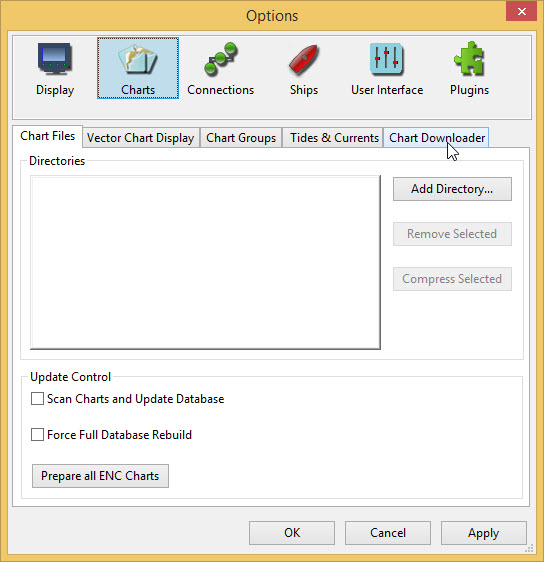
-
Sélectionnez l’onglet Chart Downloader

-
Appuyez sur btn : [Ajouter un catalogue]

Sélectionnez USA - NOAA & Inland charts et appuyez sur btn :[OK]
Deux séries de cartes sont disponibles, RNC et ENC.
-
RNC sont des cartes raster, des cartes numérisées avec des détails de navigation complets, où les détails ne peuvent pas être ajustés.
-
ENC Cartes de navigation électroniques où les objets et la quantité de détails nécessaires peuvent être choisis par l’utilisateur. Ces cartes remplacent rapidement RNC.
ENC est utilisé.
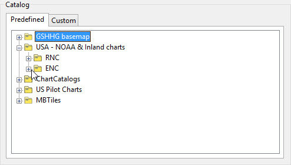
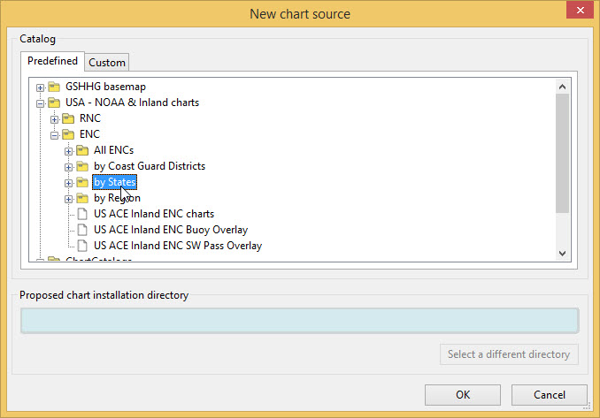
Select "by States"

Une entrée par défaut pour le dossier des cartes téléchargées s’affiche. " "Pour plus de simplicité, la valeur par défaut est utilisée.
RNC \"NY - New York\" est sélectionné. Appuyez sur btn :[OK]
Une entrée pour l’état de New York apparaît dans le catalogue.
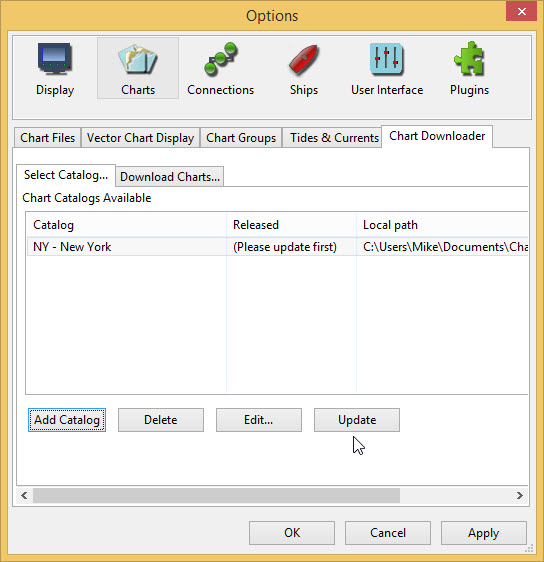
Update
Une seule carte est nécessaire CAP SABLE À CAP HATTERAS

btn : [Sélectionner tout] d’abord pour autoriser la désélection de tous les " "graphiques
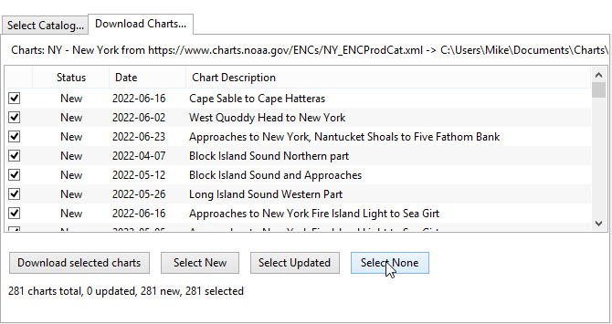
btn : [Sélectionner aucun], puis sélectionnez Cape Sable à Cape Hatteras

btn :[Télécharger les cartes sélectionnés]
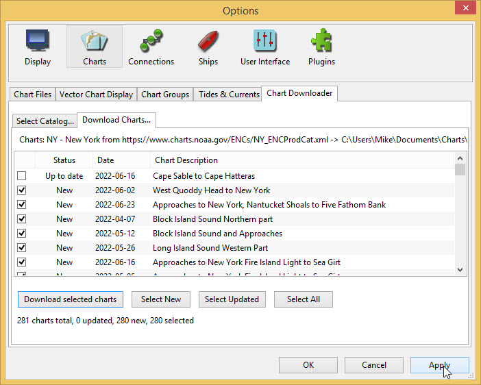
Apply
Cela vous ramène à btn : [Options]
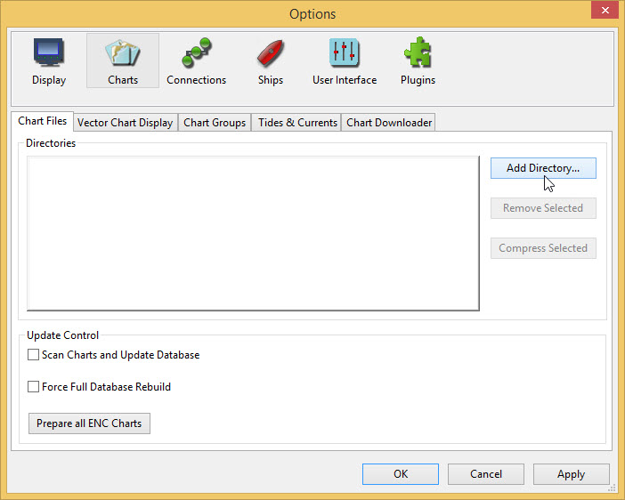
Rester dans btn :[Options] sélectionnez l’onglet Chart Files et appuyez sur btn :[Add Directory…] Trouvez le dossier US_NY où se trouve la carte Cape Sable to Cape Hatteras
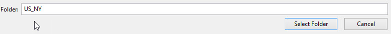
-
Appuyez sur btn :[Select Folder] Une entrée apparaît dans la liste des répertoires
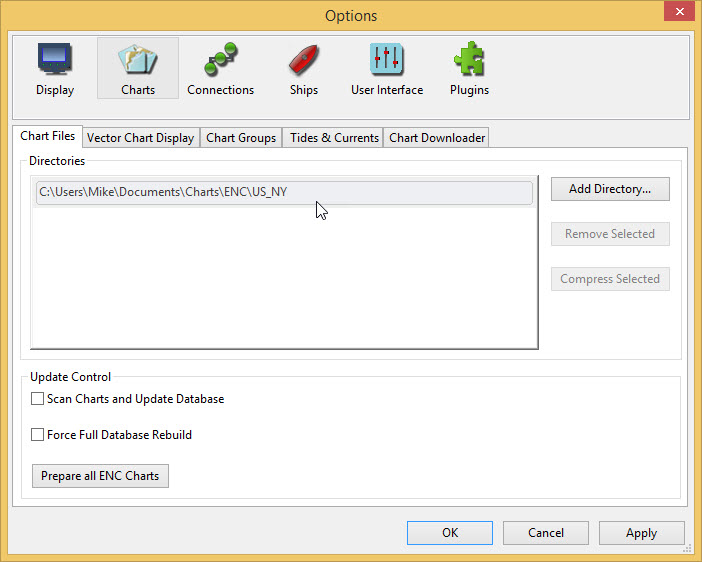
btn :[Appliquer] et btn :[OK] pour revenir à l’écran principal
Déplacez la carte de base jusqu’à ce que vous puissiez voir la côte est des États-Unis.
-
Faites glisser avec la souris
--OU--
-
Cliquez sur la flèche
 qui apparaît lorsque le pointeur de la souris est déplacé sur le côté de l’écran
qui apparaît lorsque le pointeur de la souris est déplacé sur le côté de l’écran
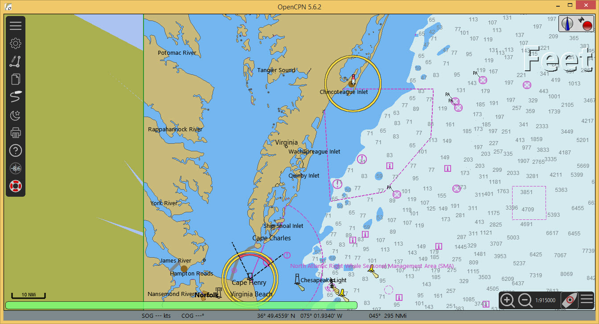
Les cartes américaines utilisent l’unité * Pieds * pour les profondeurs et les hauteurs.
Si vous souhaitez changer d’unités, utilisez btn :[Options]
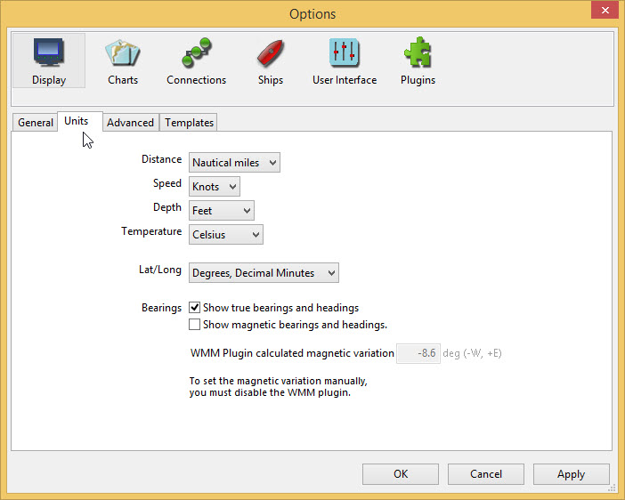
btn :[Affichage] et sélectionnez l’onglet Unités
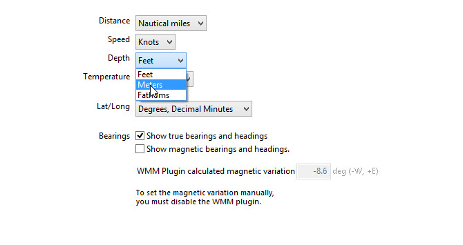
Utilisez le menu déroulant pour Depth pour changer l’unité Feet en " "Meters
Apply OK
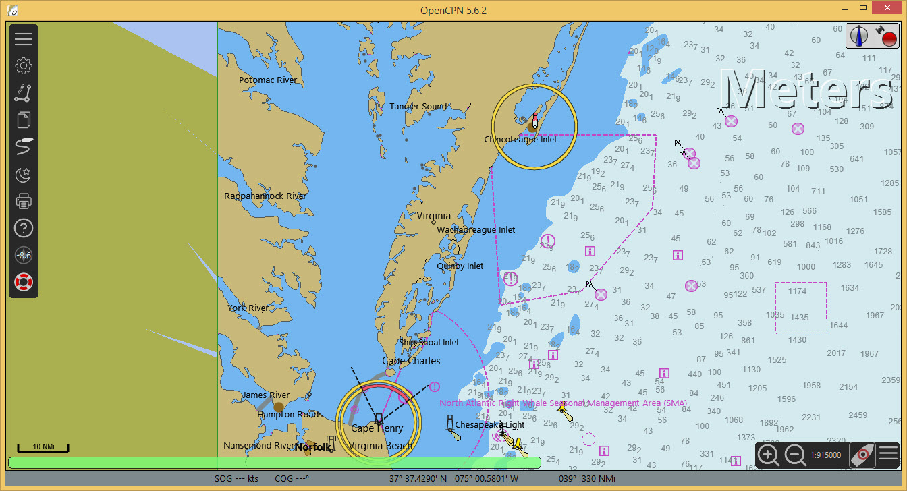
Les graphiques disponibles pour OpenCPN sont décrits dans le https://opencpn." "org/wiki/dokuwiki/doku.php?id=opencpn:opencpn_user_manual:charts:" "chart_sources[Manuel de l’utilisateur]
Même sans carte de navigation, un GPS peut être connecté et testé. Ceci est " "décrit ICI.
Fond de carte haute résolution
Pour améliorer l’apparence de la carte de base, une version haute résolution " "peut être installée à l’aide du téléchargeur de cartes (connexion Internet " "nécessaire).
btn :[Options] btn :[Graphiques] Téléchargeur de graphiques btn :[Ajouter un catalogue]
Sélectionnez Fond de carte GSHHG puis Tous les fonds de carte GSHHG
Utilisez le répertoire d’installation par défaut.
OK
btn :[Mettre à jour] btn :[Télécharger les graphiques sélectionnés]
Apply OK
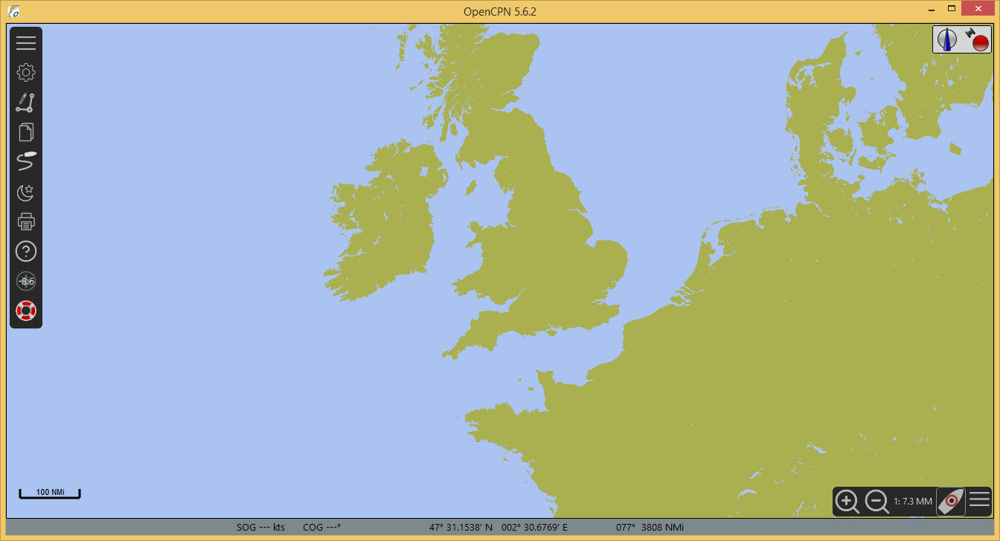